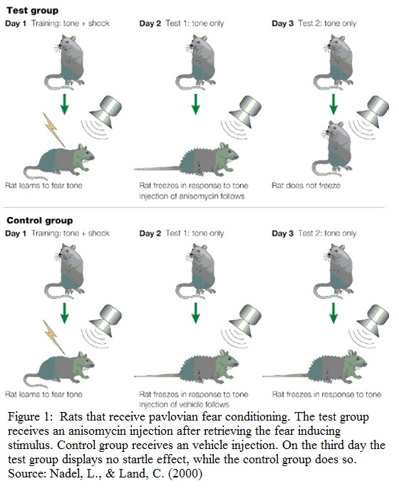

Is it possible to delete fear using the reconsolidation window?
Mini Scriptie
Author: Châtel, B.D.L. Supervisor: Harm Krugers (UvA) Date: 01-01-13 Grade: 7
Abstract
Fear memory is of great biological importance for an organism because it helps make decisions faster in possible dangerous situations. However, this can also take on extreme forms as it is the case of post-traumatic-stress-disorder (PTSD) and various phobia’s like arachnophobia (fear of spiders) or acrophobia (fear of heights). Studies have shown that fear memory can change through a process referred to as reconsolidation. During this reconsolidation phase the memory is in a labile state and is vulnerable to adaptation before it becomes stable again. In this labile state reconsolidation can be intervened by administering pharmacology like anisomycin, which blocks protein synthesis, and propranolol that targets the norepinephrine pathway. Furthermore there is experimental extinction based therapy, this does not reflect forgetting the original memory trace but it reflects new learning. As reconsolidation stabilizes the memory, extinction tends to inhibit the expression of the original memory. Another possible treatment is oxytocin; animal studies have shown that oxytocin inhibits the excitatory flow from the amygdala to the brainstem sites reducing fear response and modulating aggression.
Keywords
Post-traumatic-stress-disorder (PTSD), fear, consolidation, memory.
Introduction
The memories of fearful events have a competitive advantage over other kinds of memory and are therefore often retained very well (Pu et al.,2009) . This is of great biological importance because it enables an organism to assess a potentially dangerous situation at a high pace in which it can either confront the threat or run away. But this retention of fear can also take on extreme forms as it occurs in post-traumatic-stress-disorder (PTSD). PTSD is developed by approximately 10% of the men and 18% of the women in the US at some point in their life, and about 90% of the citizens of the US face at least one potentially life threatening situation in the course of their lives (Yehuda et al, 1998). PTSD symptoms are flashbacks, insomnia, irritability, hyper-vigilance and often anxiety. These symptoms can become so severe that they can significantly impair a person’s daily life. Beside PTSD there are also phobia’s that can be caused by fear memory. Though phobia’s have more specific triggers than PTSD they can still greatly diminish a person’s quality of life. Phobia’s such as acrophobia (being afraid of heights) and arachnophobia (being afraid of spiders) are often being encountered in people’s daily lives.
Although phobia’s are usually not caused by a specific memory but more by a hypersensitive reaction to a certain stimulus, the perceiving of height or spiders, that has evolved from a evolutionary point of view. Phobia’s and PTSD rise the question if it is possible to treat these memory’s that are the cause of fear or perhaps to delete them entirely. Several studies suggest that fearful memories are not as permanent as it was once thought. When an animal retrieves a memory it turns it into a labile protein synthesis-dependant state. While this has been established for rats it has not yet been proven to be the same for humans. Although it has been proven that consolidation and reconsolidation does occur in both humans and animals. Consolidation is the initial storage of a memory and turning the memory trace in a stable form. During memory retrieval when the memory becomes labile again it is modifiable to enhancement and disruption. When it then returns to its stable state it is called reconsolidation (wang et al., 2009). The adaptive nature of reconsolidation might be of importance for the integration of new information in order to upgrade the already existing memory (Monfils et al., 2010).
When reconsolidation is interrupted the memory can’t be brought back to its former state, which causes amnesia and weakens the emotional impact of a once fear inducing memory trace. This can be achieved by administering a protein synthesis inhibitor after memory retrieval, which can only be done in a time window of zero to six hours after retrieval, called the reconsolidation window (Nader et al., 2000, Monfils et al., 2010). Furthermore there is a way of bringing the memory to a labile state and alter the context the memory was stored in which causes it to be less associated with the frightful event that it happened in, and is causing the fear, but to be more related to a safe environment causing the memory to be less intimidating. This is called extinction.
In this paper we will discuss these types of possible therapy in greater detail, hoping to find an answer to the question: ”Is it possible to delete fear using the reconsolidation window?”. First we will discuss the molecular basis of memory, consolidation and reconsolidation, following by the brain areas where fearful memories are stored, subsequently what will happen if several types of therapy are applied and finally if it is possible to in fact delete fear itself.
The foundations of fear memory
A significant part of our knowledge about the fear learning system in the brain comes from pavlovian fear conditioning studies. In these studies an initially harmless conditioned stimulus (CS), usually a sound, is being used to elicit a defensive reaction after being linked to an unconditioned stimulus (US) which usually is a light electrical foot shock. If the subject has associated the tone to the foot shock it will display freezing, defecation, increase in norepinephrine secretion and increase in arterial pressure and heart rate even in the absence of the US (Schafe et al, 2001., Rodrigues et al, 2009). The conditioned emotional responses are also elicited by placing an animal in the chamber in which the aversive US had been previously experienced. Here the emotional responses are not elicited by the CS but by some combination of the various background or contextual stimuli that were present in the chamber when the US occurred.
Although the responses to the contextual and cued CSs are identical, the information processing pathways underlying the two forms of fear are very different. The contextual conditioning of the CS is not restricted to a single modality, instead of it being triggered by only one modality such as hearing or seeing it is a mixture between all senses (Phillips, 1992). Furthermore the contextual CSs are continuously present and cannot be brought to the animal in a specific time-dependant manner in relation to the US. And finally the contextual CSs are predictive of the general situation in which US is most likely to occur but it does not predict when the US will start. This suggests that different neural pathways take place in the analyzing of the stimulus properties of explicit and contextual stimuli but they may share common pathways in the expression of the conditioned emotional responses of either kind of CS (Phillips et al., 1992).
Several studies suggest that the amygdala, especially the lateral and basal part of the amygdala (Nader et al., 2000), and the hippocampus are of importance to fear memory. Lesions and temporary inhibition of the lateral amygdala (LA) and nearby regions causes loss of the ability to acquire fear memory or temporary lack of the expression of previously acquired fear memory and contextual CSs. The US and CS converge into single cells in the LA and during fear conditioning these cells undergo long-lasting changes in synaptic transmission and neuronal activity. It is generally believed that the hippocampus plays an important role in contextual CSs. The hippocampus receives inputs from cortical areas that integrate information across sensory modalities. This way the context is being linked to the US.
The LA activates the central nucleus of the amygdala (CE) during fear expression. The CE then projects to areas of the hypothalamus and brainstem that control the behavioural, endocrine and autonomic responses associated with fear learning. Though the LA and CE appear to be crucial in fear conditioning, several nuclei within the amygdala might be involved in the process as well (Schafe et al., 2001).
Pharmacology targeting protein synthesis inhibition
Animal testing has taught us a lot about the process of consolidation and reconsolidation, by the use of certain pharmacological compounds such as anisomycin, propranolol. Although anisomycin can only be tested on animal subject it has still been of significant importance in understanding of these memory systems. Anisomycin is an antibiotic protein synthesis inhibitor. It keeps the proteins from being synthesised that are needed for the memory to become stable after being recollected and set in its protein synthesis-dependant state, while without memory retrieval the memory stayed intact (Nader et al, 2000). In this experiment Nader et al., used pavlovian fear conditioning to pair a tone (CS) to the footshock (US), and the animals freezing behaviour was used as a measure of preservation of fear memory. Results showed that when anisomycin was administered a day after memory retrieval, memory was unaffected. But when anisomycin was infused in the lateral basal nucleus of the amygdala just after CS memory retrieval, disruption of the memory was observed. In another experiment they showed that disruption also occurred if they waited 14 days after initial training to expose the rats to a sequence of reactivation with a CS followed by anisomycin (figure 1). This suggests that long-term memory can also be targeted by anisomycin treatment. Besides the reconsolidation and consolidation inhibiting properties anisomycin is also a ribotoxin that is known to cause apoptosis. It does so by binding to the 28S subunit of an actively translating ribosome which causes the inhibition of peptide bond formation. This activates stress-activated protein kinases (SAPKs) and/or cJun NH2-terminal kinases (JNKs) that begin at least one of the apoptotic cascades. It has also been reported that a dose of anisomycin that causes 50% maximal activation of SAPKs/JNKs only produces translational inhibition at 10% of its maximum. Which suggests that messengers know to be involved in apoptosis are activated before there is significant protein synthesis inhibition (Rudy et al., 2006). This raises the question if the anisomycin induced amnesia is caused by its protein inhibitory properties or by its apoptotic properties. After all the fact that protein synthesis is inhibited would be irrelevant if the neuron is dead. This is also the reason why anisomycin is not tested in human trials, however it has given great insight in animal testing.
Pharmacology targeting β-adrenoreceptors in the Norepinephrine pathway
β-Adrenoreceptors have been known to play a significant part in memory acquisition and reconsolidation. Activation of these receptors by released norepinephrine (NE) could result in facilitation of synaptic transmission through the increases in the intracellular cAMP concentration and new protein sysnthesis (Tully et al.,2010). Infusions of norepinephrine into the BLA (basolateral complex of the amygdala) of mice and rats directly after training on emotionally arousing tasks enhances the consolidation of memory of such training experiences through stimulation of the cyclic AMP-dependent protein kinase pathway. While the blocking of the β-adrenoreceptors impairs consolidation (Roozendaal et al., 2009).
Furthermore it has been established that β-adrenoreceptor activation inhibits small-conductance Ca2+ activated K+ channels (SK channels). These SK channels seem to be situated within close proximity of NMDA-receptors in the dendritic spines of BLA neurons. This explains how they can efficiently regulate synaptic plasticity and enhance long-term potentiation (LTP) (Roozendaal et al., 2009).
Although excitatory synaptic transmission could play an important part in synaptic plasticity in the amydala, several lines of evidence also point to a central role for GABA-ergic inhibitory transmission in gating these effects (Roozendaal et al., 2009). GABA-ergic inhibition causes a suppression in consolidation. Norepinephrine however has been shown to suppress GABA-ergic inhibition of projection neurons in the lateral amygdala. This causes an enhancement in memory consolidation. Antagonists for β-adrenoreceptors infused into the amygdala block the memory-enhancing properties of GABA-ergic receptor antagonists such as norepinephrine. This means that it is interesting to research these β-adrenoreceptor antagonists for their consolidation and reconsolidation inhibiting properties, as our goal is to inhibit fear memory reconsolidation. A well used β-adrenoreceptor antagonist is propranolol. Propranolol is a sympathetic beta-blocker, which means that it inhibits the postganglionic functioning of the sympathetic nervous system. It is also able to cross the brain-blood barrier and abolishes the effect of the reconsolidation enhancing properties of norepinephrine in humans as well as animals. Propranolol can therefore be used to reduce PTSD if it is administered soon enough after a traumatic event (Pitman et al., 2002).
Extinction therapy
A non-pharmacological way of treating fear memory is through extinction. An extinction trial in which the CS no longer predicts US will lose its ability to induce a conditioned response. Experimental extinction does not reflect forgetting the original memory trace but it reflects new learning. As reconsolidation stabilizes the memory, extinction tends to inhibit the expression of the original memory (Suzuki et al., 2004). When the CSs cease to give a correct prediction of US it loses its importance to be associated to each other. Though the original memory still exists extinction tends to override the initial memory and rends the CS harmless. The efficiency of this inhibition, however, is very dependent on spatial, sensory an temporal variables. Especially for the reappearance of the previously extinguished fear is known to occur in both rodents as in humans. This happens under three general conditions. First as the CS is presented outside the extinction context which causes the renewal of the memory trace. Secondly when the original US is given unexpectedly which causes reinstatement. And finally there are cases of spontaneous recovery which happens when a substantial amount of time passed by (Monfils et al., 2009). In human clinical settings where extinction-based exposure therapy is widely used as treatment for PTSD and phobia’s there are some cases in which exposure therapy is effective. Although they do not help everyone and many relapse to showing fear due to renewal, reinstatement or spontaneous recovery.
Alternative methods for fear treatment
The neuropeptide oxytocin plays an important part in emotional and social behaviours in non-human mammals. This includes social behaviours like attachment, social recognition and aggression. It reduces anxiety and impacts on fear conditioning and extinction. In humans research targeting oxytocin has been shown to increases trust in one another. This suggests that the amydala, which highly expresses oxytocin receptors in many mammals, is involved. In human trials with fMRI techniques it is shown that oxytocin potently reduces activation of the amygdala and reduces coupling of the amygdala to brainstem regions implicated in autonomic and behavioural manifestations of fear (Kirsch et al., 2005). In humans increased activation of the amygdala shows an increase in social avoidance and social phobia, whereas a decreased activation shows hyper sociability, and increase in trust and instrumental aggression (aggression in order to obtain a certain goal).
Animal studies have shown that oxytocin inhibits the excitatory flow from the amygdala to the brainstem sites reducing fear response and modulating aggression (Kirsch et al., 2005). Mouse knock-outs for oxytocin have shown a deficit in social recognition that can be fully restored by injection of oxytocin in medial amygdala (Ferguson et al., 2001).
As oxytocin acts as an inhibitory factor for the amygdala it does not change fear memory itself by interrupting reconsolidation, as it is the case with anisomycin and propranolol, but it alters the degree in which the subject reacts to fearful events. Oxytocin decreases the activity of the amygdala which causes this decreased reaction to fear, especially in social phobia’s.
Discussion
The consolidation and reconsolidation of fear is an important part of survival. As the amygdala is important for both cued and contextual memory, the hippocampus is of great importance for retrieval of contextual memory. While consolidating fear memory’s the cells in these regions undergo long lasting changes in synaptic transmission and neural activity. When these memory’s are being retrieved they become protein-synthesis-dependant and open for changes (reconsolidation face). By interrupting this phase by administering pharmaceuticals we can alter the memory retrieval. Pharmaceuticals like anisomycin are able to disrupt reconsolidation by inhibiting protein synthesis. And propranolol inhibits the β-adrenoreceptors that prevents inhibion of GABA-ergic receptors and therefore inhibits reconsolidation (Pitman et al., 2002., Nader et al., 2000., Roozendaal et al., 2009). And when targeting oxytocin the activity of the amygdala is inhibited which causes a decrease in fear expression (Kirsch et al., 2005). Furthermore there is the possibility of non-pharmacological extinction based therapy in which the CS no longer predicts US will lose its ability to induce a conditioned response. That causes a new memory to form in which the CS is harmless, this new memory tends to inhibit the older fearful memory. The two treatments, pharmacological treatment and extinction based treatment, do not cancel each other out, it could be very successful to use extinction based therapy alongside with pharmacology. And therefore it might be of great significance for research in the future if the combination pharmacological treatment and extinction based treatment is tested. Furthermore it would be very interesting to test these treatments on subjects that have PTSD, as all tests do far were performed on healthy subjects. To truly understand fear and its biological processing could be of great importance for helping people with PTSD and phobia’s. As Franklin D. Roosevelt once said “The only thing we have to fear is fear itself.”.
References
Ferguson, J. N., Aldag, J. M., Insel, T. R., & Young, L. J. (2001). Oxytocin in the Medial Amygdala is Essential for Social Recognition in the Mouse. The Journal of Neuroscience, October 15, 2001, 21(20):8278–8285
Kirsch, P., Esslinger, C., Chen, Q., Mier, D., Lis, S., Siddhanti, S., Gruppe, H., Mattay, V. S., Gallhofer, B., & Meyer-Lindenberg, A. (2005). Oxytocin Modulates Neural Circuitry for Social Cognitionand Fear in Humans. The Journal of Neuroscience, December 7, 2005 • 25(49):11489 –11493
Monfils, M. H., Cowansage, K. K., Klann, E., & LeDoux, J. E. (2009). Extinction-Reconsolidation Boundaries: Key to Persistent Attenuation of Fear Memories. Science 324, 951 (2009); DOI: 10.1126/science.1167975
Monfils, M., Cowansage, K. K., Klann, E., Ledoux, J. E., (2010) Extinction-Reconsolidation Boundaries: Key to Persistent Attenuation of Fear Memories. Science 324, 951 (2009); DOI: 10.1126/science.1167975
Nadel, L., & Land, C. (2000). Memory traces revisited. NEUROSCIENCE VOLUME 1
Nader, K., Schafe, G. E.,& Doux, J. E. (2000). Fear memories require protein synthesis in the amygdala for reconsolidation after retrieval. Nature Vol. 406.
Phillips, R. G., LeDoux, J. E. (1992). Differential Contribution of Amygdala and Hippocampus to Cued and Contextual Fear Conditioning. Behavioral Neurosciencc 1992, Vol. 106. No. 2. 274-285
Pitman, R. K., Sanders, K. M., Zusman, R. M., Healy, A. R., Cheema, F., Lasko, N. B., Cahill, L., & Orr, S. P. (2002). Pilot Study of Secondary Prevention of Posttraumatic Stress Disorder with Propranolol. Society of Biological Psychiatry 0006-3223/02/$22.00 PII S0006-3223(01)01279-3
Pu, Z., Krugers, H. J., & Joëls, M. (2009). b-Adrenergic facilitation of synaptic plasticity in the rat basolateral amygdala in vitro is gradually reversed by corticosterone. Learn. Mem. 2009 16: 155-160
Rodrigues, S. M., LeDoux, J. E., & Robert M. Sapolsky, R. M. (2009). The Influence of Stress Hormones on Fear Circuitry. Neurosci. 2009.32:289-313
Roozendaal, B.,. McEwen, B. S., & Chattarji, S. (2009). Stress, memory and the amygdale. Nature reviews | Neuroscience Volume 10
Rudy, J. W., Biedenkapp, J. C., Moineau, J., et al. (2006). Anisomycin and the reconsolidation hypothesis. Learn. Mem. 2006 13: 1-3
Schafe, G. E., Nader, K., Blair, H. T., LeDoux, J. E. (2001). Memory consolidation of Pavlovian fear conditioning: a cellular and molecular perspective. TRENDS in Neurosciences Vol.24 No.9 September 2001
Suzuki, A., Josselyn, S. A., Frankland, P. W., Masushige, S., Silva, A. J.,& Kida, S. (2004) Memory Reconsolidation and Extinction Have DistinctTemporal and Biochemical Signatures. The Journal of Neuroscience, May 19, 2004 • 24(20):4787– 4795
Tully, K., & Bolshakov, V. Y. (2010). Emotional enhancement of memory: how norepinephrine enables synaptic plasticity. Molecular Brain 2010, 3:15
Wang, S., Alvares, L. O.,& Nader, Karim. (2009) Cellular and systems mechanisms of memory strength as a constraint on auditory fear reconsolidation. Nature Neuroscience Volume 12, Number 7.
Yehuda, R., McFarlane, A. C., Shalev, A. Y. (1998). Predicting the Development of Posttraumatic Stress Disorder from the Acute Response to a Traumatic Event. Society of Biological Psychiatry.